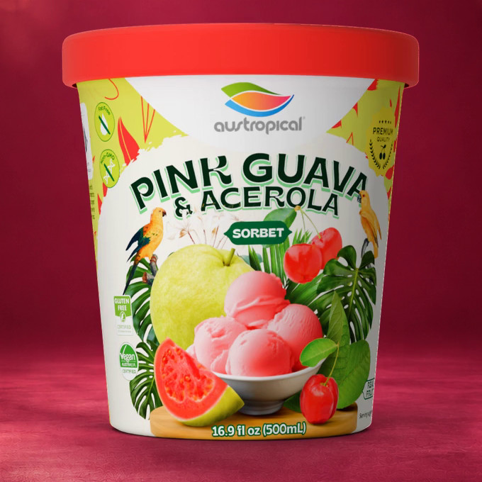
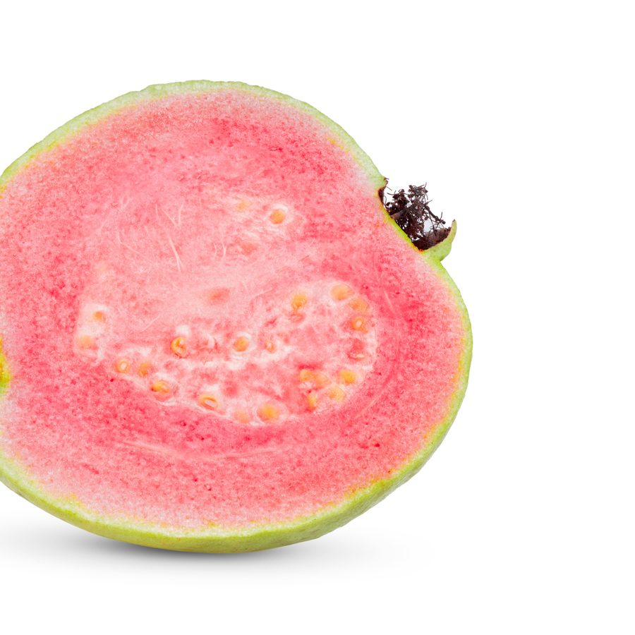
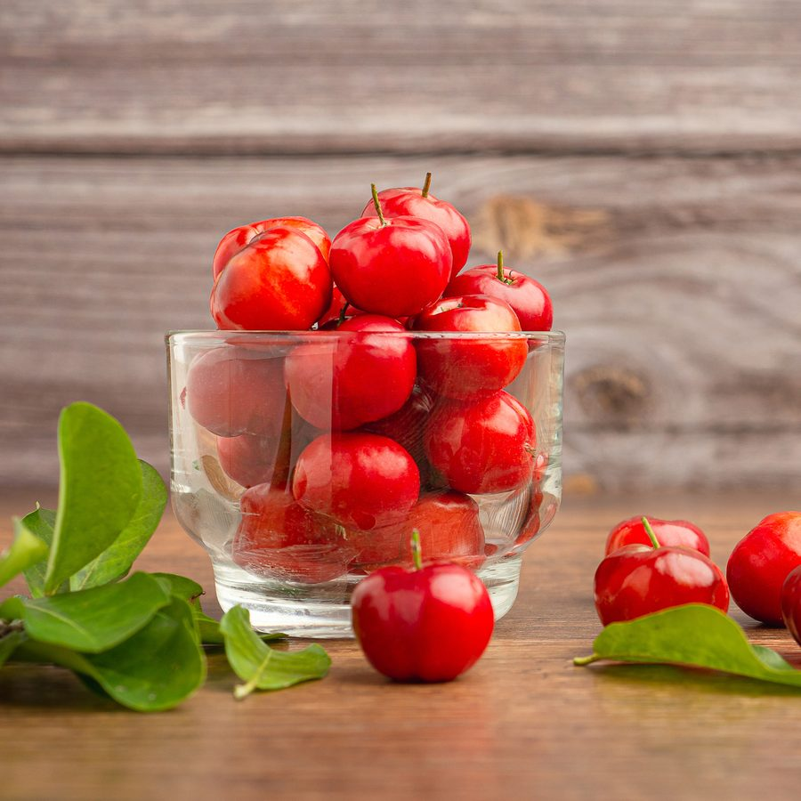

Rosy pink guava and acerola sorbet
Pink Guava & Acerola
Rosy pink guava and tart acerola, more than half of the recipe. Made in the Brazilian Amazon. Follows Original Sensation and Mango into US freezers.
- Certified vegan (Vegan Australia)
- Kosher (Kosher Australia)
Up close
Turn it. Zoom in. Read the label.
The pint and the Grab'n Go cup, in 3D: spin them, tilt them and zoom in on the real label. The bucket is one tap away.




Fruit first
29% pink guava, 28% acerola
Pink guava and acerola, a small red cherry-like fruit, make up more than half of the recipe. Carrot and beetroot extract are on the label as natural colors.

Make it a bowl
The Rosy Berry Island
Pink Guava & Acerola with strawberry and coconut. Change the toppings and the bowl gets a new name. Then share the picture.
Serving suggestion; toppings are not included.
Ingredients, nutrition and formats
For label readers.
Formats
- Pint, 16.9 fl oz (500 mL)
- Grab'n Go cup, 8.5 fl oz (250 mL), wooden spoon included
- Foodservice bucket, 22.49 lb (10.2 kg). The bowl program
Certifications
- Certified vegan (Vegan Australia)
- Kosher (Kosher Australia)
- This flavor is not certified organic.
Made in the Brazilian Amazon. Product of Brazil.
Ingredients
Organic Pink Guava (29%), Organic Acerola (28%), Filtered Water, Cane Sugar, Natural Colors (Carrot, Beetroot Extract), Stabilizers (Pectin, Locust Bean Gum).
Nutrition Facts, per 2/3 cup (147 g)
| Calories | 130 |
|---|---|
| Total Fat | 0 g |
| Saturated Fat | 0 g |
| Sodium | 0 mg |
| Total Carbohydrate | 31 g |
| Dietary Fiber | 3 g |
| Total Sugars | 27 g |
| Added Sugars | 21 g |
| Protein | less than 1 g |
Per 2/3 cup (147 g) serving.
Storage
Keep frozen at 0 °F (−18 °C) or below, in the coldest part of the freezer. The best-before date is on the container.
Grab'n Go
The Grab'n Go cup
One serving, with its own wooden spoon. The same sorbet as the pint, ready to eat on the spot.
For stores and cafésWhere to buy
Coming to US freezers · March 2027. Original Sensation and Mango arrive first; Pink Guava & Acerola follows.
Where to buyBuyers and distributors
The two-page sell sheet has the barcodes, case and pallet data. Samples and pricing come from Ray.
Sell sheet (PDF) Samples and pricing